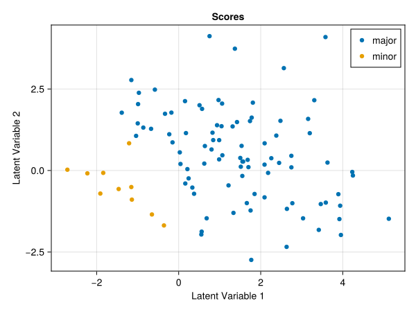
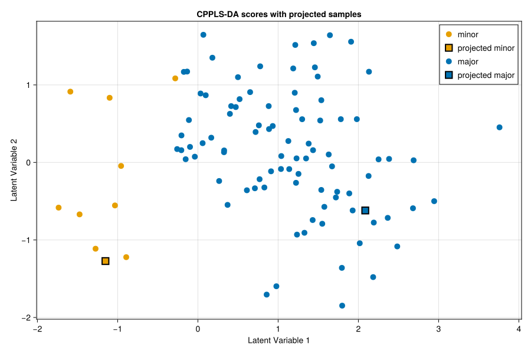

Visualization
scoreplot provides a common interface for visualizing latent scores from CPPLS models. The Plotly backend is most useful for exploratory work because the resulting figures are interactive, whereas the Makie backend is better suited to static figures for reports and documentation. The examples below show both a basic score plot and a more customized workflow in which projected samples are added with user-defined class order and marker styles.
Example
We reuse the synthetic discriminant-analysis dataset introduced on the Fit page. To keep the focus on visualization, the examples below use models that have already been specified with observation weights and, where relevant, auxiliary responses.
The packages loaded below play different roles: CPPLS provides the modeling, projection, and plotting functions, JLD2 reads the example dataset from disk, CairoMakie renders static figures for the documentation, PlotlyJS exports interactive HTML figures, and Statistics is used to orient the score axes consistently.
Most of the following setup is only needed to obtain data and fitted models that can then be plotted. It is therefore not specific to scoreplot itself, except for the backend imports and the color definitions used to keep the examples visually consistent.
using CPPLS
using JLD2
using CairoMakie
using PlotlyJS
using Statistics
samplelabels, X, classes, Y_aux = load(
CPPLS.dataset("synthetic_cppls_da_dataset.jld2"),
"sample_labels",
"X",
"classes",
"Y_aux"
)
# Use Makie's Wong palette so the class colors stay consistent across examples.
wong = Makie.wong_colors()
wong_plotly = Dict(
"major" => "rgb(0,114,178)",
"minor" => "rgb(230,159,0)"
)
# Orient score axes only for examples where separately computed scores must be compared.
function orient_scores(scores, classes; reference_class="major")
oriented = copy(scores)
reference_idx = classes .== reference_class
for lv in axes(oriented, 2)
if mean(oriented[reference_idx, lv]) < 0
oriented[:, lv] .*= -1
end
end
oriented
end
# Apply the same sign convention to projected scores so they match the training plot.
function orient_like(reference_scores, reference_classes, scores; reference_class="major")
oriented = copy(scores)
reference_idx = reference_classes .== reference_class
for lv in axes(oriented, 2)
if mean(reference_scores[reference_idx, lv]) < 0
oriented[:, lv] .*= -1
end
end
oriented
end
basic_spec = CPPLSSpec(
ncomponents=2,
gamma=0.5,
mode=:discriminant
)
basic_model = fit(
basic_spec,
X,
classes;
obs_weights=invfreqweights(classes),
Y_aux=Y_aux,
samplelabels=samplelabels
)
holdout_idx = [findlast(==("minor"), classes), findlast(==("major"), classes)]
train_idx = setdiff(collect(axes(X, 1)), holdout_idx)
X_train = X[train_idx, :]
classes_train = classes[train_idx]
Y_aux_train = Y_aux[train_idx, :]
labels_train = samplelabels[train_idx]
X_holdout = X[holdout_idx, :]
classes_holdout = classes[holdout_idx]
labels_holdout = samplelabels[holdout_idx]
plot_classes_holdout = ["projected $class" for class in classes_holdout]
advanced_spec = CPPLSSpec(
ncomponents=2,
gamma=intervalize(0:0.25:1),
mode=:discriminant
)
advanced_model = fit(
advanced_spec,
X_train,
classes_train;
obs_weights=invfreqweights(classes_train),
Y_aux=Y_aux_train,
samplelabels=labels_train
)
train_scores = orient_scores(xscores(advanced_model)[:, 1:2], classes_train)
heldout_scores = orient_like(xscores(advanced_model)[:, 1:2], classes_train,
project(advanced_model, X_holdout))Basic Score Plot
The most common use case is simply scoreplot(model), where the function extracts the stored sample labels, sample classes, and first two latent variables directly from the fitted model. In that situation, no further arguments are required unless you want to customize the appearance. Titles, marker sizes, class order, colors, and other styling options can all be set explicitly, but it is useful to first see the minimal form. The more advanced example below then illustrates how those options can be used in practice.
With the Makie backend, the result is a static figure that can be embedded directly into the documentation.
basic_makie = scoreplot(
basic_model;
backend=:makie
)
save("scoreplot_basic_makie.svg", basic_makie)
The same score plot can also be generated with the Plotly backend. In the static documentation, it is most practical to export the interactive figure as HTML and link to it.
basic_plotly = scoreplot(
basic_model;
backend=:plotly
)
PlotlyJS.savefig(basic_plotly, "scoreplot_basic_plotly.html")Open the interactive Plotly version
Projected Samples With Custom Styling
scoreplot also works well when training samples and projected samples need to be shown in the same score space. In the next example, we fit a model after holding out one sample from each class, project those held-out samples into the fitted latent space, and then distinguish them from the training samples by marker shape while keeping the class colors fixed.
advanced_makie = scoreplot(
vcat(labels_train, labels_holdout),
vcat(classes_train, plot_classes_holdout),
vcat(train_scores, heldout_scores);
backend=:makie,
figure_kwargs=(; size=(900, 600)),
title="CPPLS-DA scores with projected samples",
group_order=["minor", "projected minor", "major", "projected major"],
group_marker=Dict(
"minor" => (; color=wong[2]),
"projected minor" => (; color=wong[2], marker=:rect, markersize=18,
strokecolor=:black, strokewidth=2),
"major" => (; color=wong[1]),
"projected major" => (; color=wong[1], marker=:rect, markersize=18,
strokecolor=:black, strokewidth=2)
),
default_marker=(; markersize=14)
)
save("scoreplot_projected_makie.svg", advanced_makie)
The same idea can be implemented with the Plotly backend. Here the projected samples are drawn with square markers and black outlines so that they remain visually distinct in the interactive view.
advanced_plotly = scoreplot(
vcat(labels_train, labels_holdout),
vcat(classes_train, plot_classes_holdout),
vcat(train_scores, heldout_scores);
backend=:plotly,
title="CPPLS-DA scores with projected samples",
group_order=["minor", "projected minor", "major", "projected major"],
group_marker=Dict(
"minor" => (; color=wong_plotly["minor"]),
"projected minor" => (; color=wong_plotly["minor"], symbol="square",
line=PlotlyJS.attr(color="black", width=1.5)),
"major" => (; color=wong_plotly["major"]),
"projected major" => (; color=wong_plotly["major"], symbol="square",
line=PlotlyJS.attr(color="black", width=1.5))
),
default_marker=(; size=11)
)
PlotlyJS.savefig(advanced_plotly, "scoreplot_projected_plotly.html")Open the interactive projected Plotly version
These two examples illustrate the main intended use of the backends. Makie is a good default choice for publication-style static figures, whereas Plotly is especially useful for exploratory inspection of scores because sample identities and exact coordinates are available interactively.
API
CPPLS.scoreplot — Function
scoreplot(samples, groups, scores; backend=:plotly, kwargs...)
scoreplot(cppls; backend=:plotly, kwargs...)Backend dispatcher for CPPLS score plots. Use backend=:plotly (default) for the PlotlyJS extension or backend=:makie for the Makie extension.
The dispatcher accepts backend-agnostic keywords and passes any remaining keywords to the selected backend. To avoid confusion, think of the keywords as belonging to three groups:
General (backend-agnostic)
backend::Symbol = :plotlySelect the backend. Supported values::plotly,:makie.
PlotlyJS backend keywords (PlotlyJSExtension)
group_order::Union{Nothing,AbstractVector} = nothingOrder of groups (also draw order; later is on top). Ifnothing, useslevels(groups)forCategoricalArray, elseunique(groups).default_trace = (;)PlotlyJS scatter kwargs applied to every group (except marker).group_trace::AbstractDict = Dict()Per-group PlotlyJS scatter kwargs.default_marker = (;)PlotlyJS marker kwargs for every group (keys must beSymbols).group_marker::AbstractDict = Dict()Per-group marker kwargs (keys must beSymbols).hovertemplate::AbstractString = "Sample: %{text}<br>Group: %{fullData.name}<br>LV1: %{x}<br>LV2: %{y}<extra></extra>"Hover text template. The default shows sample, group, LV1, LV2.layout::Union{Nothing,PlotlyJS.Layout} = nothingLayout object; ifnothing, a default layout is created usingtitle,xlabel, andylabel.plot_kwargs = (;)Extra kwargs passed toPlotlyJS.plot(e.g.,config).show_legend::Union{Nothing,Bool} = nothingIffalse, setsshowlegend=falsefor all traces.title::AbstractString = "Scores"xlabel::AbstractString = "Latent Variable 1"ylabel::AbstractString = "Latent Variable 2"
Makie backend keywords (MakieExtension)
group_order::Union{Nothing,AbstractVector} = nothingOrder of groups (also draw order).default_scatter = (;)Makie scatter kwargs applied to every group.group_scatter::AbstractDict = Dict()Per-group scatter kwargs.default_trace = (;)Additional scatter kwargs applied to every group (legacy convenience).group_trace::AbstractDict = Dict()Per-group scatter kwargs (legacy convenience).default_marker = (;)Marker-related kwargs applied to every group.group_marker::AbstractDict = Dict()Per-group marker kwargs.title::AbstractString = "Scores"xlabel::AbstractString = "Latent Variable 1"ylabel::AbstractString = "Latent Variable 2"figure = nothingProvide an existingFigureto draw into.axis = nothingProvide an existingAxisto draw into.figure_kwargs = (;)Extra kwargs passed toFigurewhen it is created.axis_kwargs = (;)Extra kwargs passed toAxiswhen it is created.show_legend::Bool = trueIftrue, callsaxislegend.legend_kwargs = (;)Extra kwargs passed toaxislegend.show_inspector::Bool = trueIftrue, enablesDataInspectoron GLMakie/WGLMakie.inspector_kwargs = (;)Extra kwargs passed toDataInspector.
Notes
- The dispatcher checks that the requested backend is loaded and errors with "Backend <pkg> not loaded" if not.
- Unknown backend values throw
error("Unknown backend"). scoresmust have at least two columns (LV1 and LV2).